| Rational Number Project Home Page |
|
|
| Behr, M. & Post, T. (1992). Teaching rational number and decimal concepts. In T. Post (Ed.), Teaching mathematics in grades K-8: Research-based methods (2nd ed.) (pp. 201-248). Boston: Allyn and Bacon. |
|
|
| 7 |
Teaching
Rational Number
|
|
MERLYN
J. BEHR THOMAS
R. POST |
Introduction
By this time you should be getting the impression that mathematical topics exist as part of an intricate web of interrelationships. Rational numbers are no exception. To understand rational numbers (fractions, ratios, decimals, number lines, parts of wholes) one must have a solid foundation in the four operations with whole numbers and an understanding of measurement concepts. Rational numbers are the first set of numbers children experience that are not based on a counting algorithm of some type. To this point, counting in one form or another (forward, backward, skip, combination) could be used to solve all of the problems encountered. Now with the introduction of rational numbers the counting algorithm falters (that is, there is no next rational number, fractions are added differently, and so forth). This shift in thinking causes difficulty for many students.
This chapter will develop a wide variety of ideas relating to rational numbers and will discuss how student misunderstandings might be effectively corrected. As with previous chapters, and in concert with the cognitive perspective of human learning, emphasis will be placed on student understanding of the ideas involved.
Rational number concepts are among the most important concepts children will experience during their presecondary school years. There is cause to be concerned about children's apparent lack of ability in this area. The National Assessment of Educational Progress (NAEP), conducted in 1972-73 and again in 1977-1978 (Carpenter, Corbitt, Kepner, Lindquist, & Reys, 1980), suggests that children seem to be learning many mathematical skills at the level of rote memorization and do not understand underlying concepts.
More recent NAEP studies were conducted in 1982 and 1986 (Kouba, Brown, Carpenter, Lindquist, Silver, & Swafford,1988). Writing in the Arithmetic Teacher, Kouba et al. (1988) suggest that third- and seventh-grade students have difficulty with problems that do not involve routine, familiar tasks and that students appear to be learning mathematical skills at the rote manipulative level.
Other reported findings of NAEP studies (Carpenter, Coburn, Reys, & Wilson, 1976; Carpenter et al., 1980) indicate many children have difficulty with elementary rational number concepts. For example, both assessments found that most 13- and 17-year-old children successfully add fractions with like denominators, but only one-third of 13-year-old children and two-thirds of 17-year-old children could correctly add 1/3 and 1/2. Reporting on other NAEP findings, Post (1981) raised questions about children's ability to estimate rational numbers. Only 24 percent of the nation's 13-year-old children were able to estimate the sum of 12/13 and 7/8 by selecting the correct answer among 1,2, 19, and 21. The fact that two popular choices were 19 (28 percent) and 21 (27 percent) hints at some misconceptions these students had.
Looking at children's performance on estimating 12/13 + 7/8 one can begin to make some conjectures about their lack of understanding: (1) These children apparently did not realize that both 12/13 and 7/8 are close to one, because this understanding would have made the answer 2 an easy choice; this raises more general questions about whether or not children understand that a rational number has size, and whether or not they are able to determine its size. (2) The popular choices of 19 and 21 suggest the application of memorized (and incorrect) rote procedures, in this case simply adding numerators and denominators; children do not have a sense of the reasonableness of answers; children do not clearly distinguish between whole number operations and operations with rational numbers; children do not understand a fraction such as 12/13 to be one number with a single value, but rather understand it to be two numbers each with a distinct value and meaning.
On the basis of the 1986 data, Kouba et al. (1988) report that only about 40 percent of seventh-grade students could identify the point on a number line that represented a simple fraction and about two-thirds could identify the larger of two fractions like 3/5 and 2/6. Fewer than 40 percent were able to identify the largest and smallest of four fractions in a simple problem situation.
Analysis of Rational Numbers
Rational numbers can he interrupted in at least six ways: a part to whole comparison, a decimal, a ratio, an indicated division (quotient), an operator, and as a measure.
The Part-Whole and Measure Subconstructs
The part-whole interpretation of rational numbers depends directly on the ability to partition either a continuous quantity or a set of discrete objects into equal sized subparts or sets
The notion of continuous quantity usually refers to length, area, or volume. In this case, the whole of which a fraction is a part, is made up of one single object such as a sheet of paper, one apple, one pie, or one rectangle. When the whole consists of more than one object—a dozen eggs, 8 cookies, 15 counting chips, 25 cents—then this whole is referred to as being discrete: it is made up of several discrete (separate) objects. The part-whole notion of rational numbers is fundamental to the other interpretations.
The part-whole interpretation is usually introduced very early in the school curriculum. Children in first and second grades have a primitive understanding of the meaning of 1/2 and the basic partitioning process (Kieren, 1976). It is not until fourth grade, however, that the fraction concept is treated in a substantial and systematic fashion. Students normally explore and extend their rational number ideas through the eighth grade; then these understandings are applied in elementary algebra. Many student difficulties in algebra can be traced back to an incomplete understanding of earlier fraction ideas.
Geometric regions, sets of discrete objects, and the number line are the models most commonly used to represent fractions in the elementary and junior high school.
For example, 1/2 could be represented with a geometric region as in Fig. 7-1a, with a discrete set as in Fig. 7-1B, and with a number line as in Fig. 7-lc. Interpretation of geometric regions apparently involves an understanding of the notion of area.
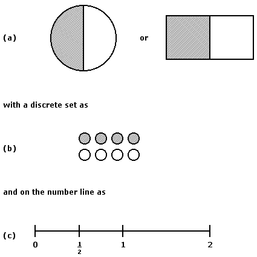
FIGURE 7-1
The number line model adds an attribute not present in region or set models, particularly when a number line of more than one unit long is used. Novillis-Larson (1980) presented seventh-grade children with tasks involving the location of fractions on number lines that were one or two units long and for which the number of segments in each unit segment equaled or was twice the denominator of the fraction. Results of the study indicated that among seventh-graders, associating proper fractions with points was significantly easier on number lines of length one and when the number of segments equaled the denominator. For example, it was easier for students to locate 7/8 on the number line in Fig. 7-2a than on the number line in Fig. 7-2b.
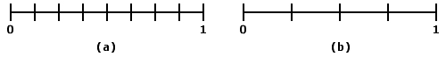
FIGURE 7-2
Novillis-Larson's findings suggest children's apparent difficulty in perceiving the unit of reference: When a number line of length two units was involved, almost 25 percent of the children tested used the whole line segment as the unit. Novillis-Larson's data also indicate that children are unable to associate the rational number 1/3 with a point when the partitioning suggests 2/12 (Fig. 7-3).
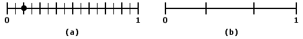
FIGURE 7-3
More recent work (Behr & Bright, 1984) confirms the findings of Novillis-Larson. Behr and Bright found children especially have difficulty coordinating symbolic fraction symbols with points on the number line. They found that children had difficulty associating a fraction such as 3/8 with a point on the number line if the number line was partitioned to show anything but eighths (for example, fourths, halves, or sixteenths). Such results suggest an imprecise and inflexible notion of fraction among seventh-graders.
Hiebert and Tonnessen (1978) investigated whether or not the type of embodiment (continuous quantity versus discrete quantity) demands different student skills. In this study children were required to divide a quantity equally among a number of stuffed animals. Hiebert and Tonnessen found that children performed considerably better on tasks involving the discrete case (set/subset) than the continuous case. The part-whole interpretation is an important foundation for other rational number interpretations, it is especially useful in developing the language and naming of rational numbers, and can be used to show the relationship between unit fractions, such as 1/3, 1/4, 1/20, and nonunit fractions. For example, looking at the rational number 3/4 (a nonunit fraction) from a part-whole perspective, one easily sees that 3/4 is equal to 1/4 and 1/4 and 1/4 (Fig. 7-4).
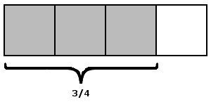
FIGURE 7-4
The association between unit and nonunit fractions also seems to make the transition particularly easy from fractions of a size less than or equal to one, to those of a size greater than one. For example, 5/4 becomes 1/4 + 1/4 + 1/4 + 1/4 + 1/4, or one whole and 1/4.
The part-whole interpretation seems to be important in providing "preconcept" activity for equivalence and order relations and for operations on rational numbers. The demonstration of the equivalence (or nonequivalence) of fractions based on manipulative materials requires the ability to "repartition'' a continuous object or a set of discrete objects. That is, 3/4 = 6/8 because the diagram in Fig. 7-4 can also be viewed as the diagram in Fig. 7-5.
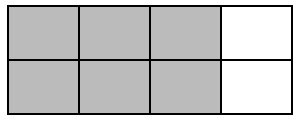
FIGURE 7-5
The multiplication of rational numbers can be introduced as an extension of the multiplication of whole numbers—as the problem of finding a part of a part, or a fraction of a fraction. We will illustrate these ideas in a later section of this chapter.
Rational Numbers as Ratios
The ratio interpretation of rational numbers conveys the notion of relative magnitude When two ratios are equal they are said to be in proportion to one another. A proportion is simply a statement equating two ratios. The use of proportions is a very powerful problem-solving tool in a variety of physical situations and problem settings that require comparisons of magnitudes.
Rational Numbers as Indicated Division
According to the part-whole interpretation of rational numbers, the symbol a/b usually refers to a part of a single quantity. In the ratio interpretation of rational numbers, the symbol a/b refers to a relationship between two quantities. The symbol a/b may also be used to refer to the operation of division. That is, a/b is sometimes used as a short way of writing a ÷ b. This is the indicated division (or indicated quotient) interpretation of rational numbers.
The major component of understanding involved in the quotient interpretation is that of partitioning. Thus, the problem of dividing three pizzas equally among four persons can be solved by cutting (partitioning) each of the three pizzas into four equivalent parts (Fig. 7-6) and then distributing one part from each pizza to each individual (Fig. 7-7). Thus, each person will receive 1/4 + 1/4 + 1/4, or 3/4.
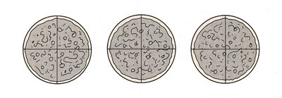
FIGURE 7-6
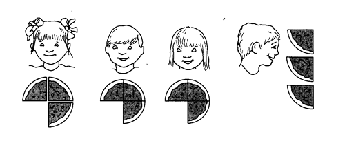
FIGURE 7-7
|
EXERCISES 1. If five pizzas are shared equally among four people, how much pizza does each person get? Solve this problem with partitioning. 2. Discuss how your solution to Exercise 1 suggests the answer 5 ÷ 4. 3. Bill has 12 pennies, which he shares equally with 4 children. Draw a set of 12 circles to represent the 12 pennies, partition it to show the equal shares, and shade the circles that represent one share. What fraction of the 12-penny whole does this represent? How many pennies are in this fraction of the whole? 4. Draw a large circle to represent a pizza. Partition the pizza to show 4 equal shares, and shade one share. What fraction is this of the whole pizza? What differences do you see in the partitioning that you did in Exercise 1 as compared to that in Exercise 4? 5. What difficulties do you think children might have with these tasks? |
Learning about Rational Numbers: Special Problems
Whatever interpretations one takes for the concept of rational numbers, other than decimal, the standard symbol for it is a/b, where a and b are whole numbers and b doesn't equal 0. For example, the symbol for three-fifths is 3/5. This symbol, 3/5, is both simple and complex. In one sense its interpretation is simple; the 5 tells how many parts a whole is partitioned into while 3 tells how many of these are considered. In this consideration the 3 and the 5 each are separate and distinct numbers. On the other hand, the symbol 3/5 represents a single rational number with a unique value.
When children add 2/3 + 3/4 and incorrectly state that 5/7 is the answer, do you believe they understand each of 2/3 and 3/4 as one or two numbers? When children estimate 12/13 + 7/8 to be 19 or 21, they are not treating 12/13 and 7/8 each as a single number. In order to arrive at either 19 or 21 they had to have detached 12 from 12/13 and 7 from 7/8. How does a child achieve the understanding that 3/5, for example, represent one single conceptual entity as well as three of five equal parts? What instructional experiences will help the child to develop this notion? What tasks can be used to assess whether the child has this notion?
Let's think carefully about what might be involved for a child to understand that 3/5 represents a single entity, and in addition understand what that entity is, and that it has a size and what that size is. When the child begins to study rational numbers he or she already has a good understanding of whole numbers. In 3/5, both the 3 and 5 have meaning. The child initially understands them in terms of size, both in a relative and absolute sense. The child has a sense of how big 3 and 5 are, that 5 is two greater than 3. When a child sees 3/5 and 6/8, how does he or she begin to see these same things? In a symbol such as 3/5 there are at least three important things expressed: (a) The size of the numerator (3), (b) the size of the denominator (5), and (c) a relationship between 3 and 5. There are at least two important relationships between 3 and 5; one is additive, the other is multiplicative. The additive relationship between 5 and 3 is what the child already knows; it is expressed by the difference between 5 and 3—2. The multiplicative relationship is something the child doesn't know, and this relationship is essential to understanding that 3/5 is a single number, that it has a size, and what that size actually is.
The Rational Number Project (RNP)—a research project sponsored by the National Science Foundation since 1979—has investigated children's learning of rational numbers and has given special consideration to the question of children's development of the size concept of rational numbers. This project has also investigated which learning experiences facilitate or impede children's progress toward understanding rational number size, as well as other rational number related concepts (Behr, Lesh, Post, & Silver, 1983; Post Behr, Lesh, & Wachsmuth, 1985).
The Effect of Perceptual Distractors
RNP investigators gave fourth-grade children the following task: In each diagram (see Figure, 7-8), shade 2/3.
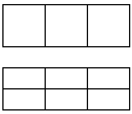
FIGURE 7-8
While the first part of this task was easy, the investigators were surprised to find the amount of difficulty the second diagram posed for many children. The extra horizontal line represented a significant perceptual distractor for them. One child explained after much frustration and effort, "If I pretend the line isn't there, it's easy." Another child observed, "I know I should pretend the line isn't there, but I can't." Keep this observation in mind in the section on methods for teaching children the concept of equivalent fractions later in this chapter. To understand that 2/3 is equivalent to 4/6 (that is, 2/3 = 4/6), it is important for a child to see that the diagram in Fig. 7-9 represents both 2/3 and 4/6. In order to do so, the child must deal with the perceptual distraction caused by the horizontal line when seeing the diagram as 2/3. Children will mentally "put in" and "take out" the line. (A chapter by Behr, Lesh, Post, and Silver [1983] provides more information about children's ability to deal with perceptual distractors and hypothesize causes for these difficulties.)
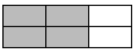
FIGURE 7-9
Order and Equivalence
RNP investigators gave considerable attention to teaching and assessing children's ability to order rational numbers and their ability to generate equivalent fractions. The information presented here about children's strategies in dealing with questions of the order or equivalence of rational numbers emanates from experimental work of the Rational Number Project (see Behr. Wachsmuth, Post, & Lesh, 1984; and Post, Wachsmuth, Lesh, & Behr, 1985). During 18 weeks of project teaching experiments with fourth-grade children in two locations, the RNP emphasized the use of manipulative aids and considered five topics. naming fractions, identifying and generating fractions, comparing fractions, adding fractions with the same denominators, and multiplying fractions. The children modeled these ideas using materials, pictures, symbols, and verbal descriptions. Each child was given individual assessment interviews on 11 separate occasions. The interviews were conducted approximately every 3 weeks during the 18-week instructional period. Each interview was audio taped or videotaped and later transcribed.
During these RNP interviews children were asked to order (decide which is greater) fractions of three basic types: same numerator fractions, same denominator fractions, and fractions with different numerators and denominators. Analysis suggested five or six different strategies were used by children for each of the three types of conditions. The majority of these were valid strategies and in some way recognized the relative contributions of both numerator and denominator to the overall size of the fraction. In some cases, however, children focused only on the numerator or only on the denominator and as a result made incorrect conclusions. In other instances they compared each to a common third number (usually 1/2 or 1) and were successful in ordering the given fractions. For example, 1/3 is less than 5/8, because 1/3 is less than 1/2 and 5/8 is greater than 1/2. This is called the transitive strategy.
Even after extensive instruction some children were at times negatively influenced by their knowledge of whole number arithmetic and as a result made errors such as 1/3 < 1/5, explaining that this is true because 3 < 5.
|
EXERCISES
|
Going back to the children's performance on the NAEP item of estimating the sum of 12/13 + 7/8, one can begin to see that the understanding of the relative size of rational numbers is important. It seems essential that children be able to answer questions about the order or equivalence of two rational numbers to have an understanding of the meaning of operations with addition, subtraction, multiplication, and division of fractions. Teaching, suggestions for developing this important concept are in a later section of this chapter.
Another task, which proves to be a challenge to children, called Construct-the-Unit requires the child to construct the unit-whole from a given fractional part. It is the reversal of the problem of finding a fractional part of a unit-whole, and although important, it is almost never included in the elementary school fraction-related curricula. We consider this reversal task important from a point of view consistent with Piagetian psychology. Piaget suggests the understanding of a process is greater when a child is able to see that the process can be reversed to return to the starting point. In this case the process of finding a fraction of a whole can be reversed to find the whole of which a fraction is part. A typical task was given as: If this is 3/5, find the unit-whole. Or in a discrete context: If is 3/5, find the unit.
Children's responses were of various types. Some explanations indicated that they first decomposed the given fractional part into unit fractions (in this case three 1/5s), and then the unit-whole was developed by repealing this unit fraction, that is, becomes , each part identified as 1/5. The whole is 5/5 so the correct answer becomes . Some explanations indicated the child was not aware that the fractional part is composed of, or decomposable to, unit-parts or unit-fractions equal in number to the numerator. Another explanation suggested that the child used the given fractional part as the unit whole or used the fractional part as a unit fraction.
Partitioning Behavior
The concept of partitioning or dividing a region into equal parts or of separating a set of discrete objects into equivalent subsets is fundamental to an understanding of rational numbers. Polhier and Sawada (1983) investigated the development of this skill from kindergarten to third grade. The basic finding of this interesting study is that partitioning ability develops gradually through a succession of five stages.
A child first learns to partition in two. This is followed by the ability to perform successive halvings so that partitioning in 4, 8, 16, and so forth can be accomplished. This is followed by the ability to make other even-numbered partitions such as 6 and 10. Partitioning the whole into an odd number of parts follows when a child first observes that a cut other than that which divides in two equal parts is possible. After this discovery is made, the ability to partition into 3, 5, 7, or an odd prime number of parts is possible for the child. Finally, the ability to partition into a number of parts that is a product of two odd numbers, such as 9 and 15, follows.
|
EXERCISES
|
Teaching Suggestions
Developing the Basic Fraction Concept
Partitioning—A Basic Skill
It is easy to see that partitioning or subdividing is a fundamental concept underlying children's understanding of fractions. In the learning of the fraction concept it is important that a child has actual physical experience with partitioning; later just imagining partitioning will suffice and may ultimately be desirable.
In this section we will demonstrate manipulative aids the teacher will find useful in helping children learn about fractions. Two of these aids, paper folding and centimeter rods, are called continuous models; the other, counting chips (for example, game chips such as poker chips), is called a discrete (countable) model.
The concept of a whole underlies the concept of a fraction. We will refer to a whole also as unit, or unit-whole. When we refer to 2/3 of an apple, then the apple is the whole, or unit, to which 2/3 refers. If we speak of 2/3 of a dozen apples, then the set of 12 apples serves as the unit to which 2/3 refers. In both cases one can imagine that 2/3 is arrived at through a partitioning process. When the unit-whole is one apple, 2/3 is obtained by partitioning the unit-whole (one apple) into three (equal-sized) parts and designating two of the parts. Similarly, when the whole is 12 apples, 2/3 can he obtained by partitioning this whole (12 apples) in three equal-sized parts (equivalent subsets) and choosing two parts.
At this point, you should think carefully about the different kinds of knowledge the child needs to partition discrete and continuous units. For a continuous unit, one object is made into three parts, and each part is a single continuous connected entity. This singleness, continuity, and connectedness are evident to the child perceptually and therefore are likely to be conceptually evident as well. On the other hand, for the discrete set of 12 apples, each equal-sized part (equivalent subset) consists of four separate, nonconnected objects. Nevertheless, in the process of partitioning and conceptualizing 2/3 of 12 apples, the child must conceptually think of the 12 apples as one whole unit. That is, the 12 objects must become a conceptual entity. Similarly, it is difficult for the child because each of the three parts has four objects, so now the child must mentally think of four objects as one you guess what error children might make early on in their learning about fractions asked to find 2/3 of a set of 12? You guessed it! Some children will pick out 2 thinking that that's what the numerator means, two parts. It is difficult for some children to understand initially that each part has four subparts in it. While the research does not provide clear-cut suggestions about this matter, we recommend the fraction could be developed on the basis of continuous models and then a transfer can be made to discrete models.
We also recommend children be given the opportunity to partition various objects. For example, partition a sheet of paper into two equal parts, later into four equal parts, then eight. Young children will need some special guidance in partitioning paper into an odd number of parts. Where to make the first cut, other than in the middle, needs to be given special attention. Similarly, children can be given sets of 4, 8, or 12 counting chips and asked to partition these sets into four parts. After a child has made the partitioning into four parts, an important activity is for the child to designate (that is, show the teacher and other children) what is one part, two parts, three parts, and four parts. Notice that one doesn't have to bring in the language of fraction for a child to have a meaningful experience with partitioning. These early experiences with partitioning may be as important to a child's development of fraction concepts as counting is to their development of whole number concepts. By the way, these early experiences include more involved challenges (see Fig. 7-10).
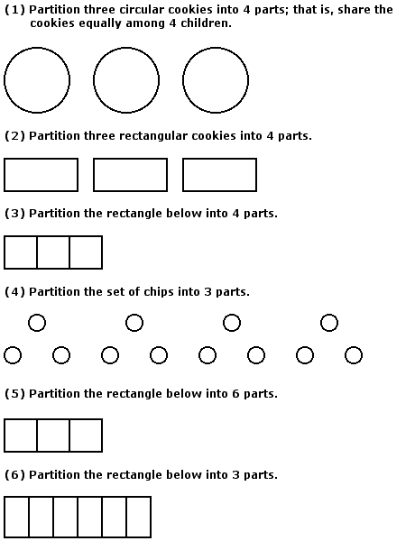
FIGURE 7-10
Paper folding is an excellent partitioning activity for children. Take a standard size sheet of paper. Ask the children to fold the sheet in either of the two ways suggested by a dotted line as shown in Fig. 7-1 1. When the paper is folded, it looks like the picture in Fig. 7-12.
Now have the children fold the paper again. The second fold can be accomplished in more than one way, as shown in Fig. 7-13. After the second fold is made in accordance with one of the patterns shown in Fig. 7-13, the child sees one of the shapes shown in Fig. 7-14.
Next, the child should be asked to unfold the paper; the result will look like one of the three designs shown in Fig. 7-15. Then the child should be asked to show one, two, three, and four parts.
A challenge activity would be to continue folding any one of the results shown in Fig. 7-15 to show eight parts and then to imagine removing fold lines to see four parts again.
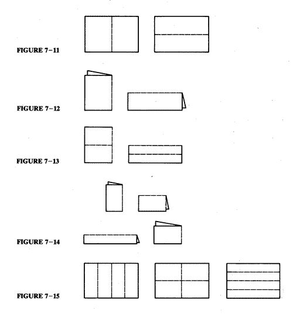
|
EXERCISES
|
In this section we will show how partitioning is used in showing fractions in the part-whole interpretation of rational numbers.
Using the rectangles partitioned into four parts as shown in Fig. 7-15, any one of the diagrams in Fig. 7-16 is satisfactory for showing 1/4; each of the diagrams illustrates 3/4.
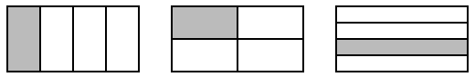
FIGURE 7-16
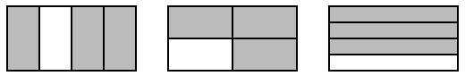
FIGURE 7-17
Also observe that each demonstration of 3/4 can be interpreted as 1/4 + 1/4 + 1/4, or as 2/4 + 1/4, or 1/4 + 2/4. Thus, even as the basic concept of fraction is being developed, the concept of adding fractions with like denominators can be foreshadowed.
Chips can be used as a discrete model. For example, a child might proceed, with a teacher's help, to show 2/3 using a set of six chips as a unit-whole (see Fig. 7-l8).
Not all children will necessarily know that to partition a set of six chips into three equal subsets two chips go into each group. To help you might suggest that the child start three sets by moving three chips, each to a separate spot (see Fig. 7-19). Then a child can put more chips into each subset, one at a time, until all chips are used up (Fig. 7-20). Finally, two parts (two subsets each with two chips) are covered with different colored chips (Fig. 7-21).
Note: Throughout these activities, whenever we use the chip model for fractions, we will assume that the chips representing the unit are white and chips used to cover or show the actual fractional part are a darker color.
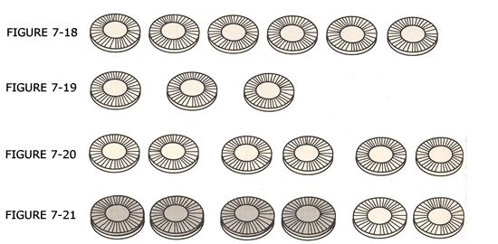
|
EXERCISE
|
Cuisenaire Rods
Another manipulative aid to use in teaching the concept of fraction is centimeter rod. We will illustrate by constructing a representation of 3/4. The first question to consider, is what rod to use for a unit (the whole). It should be a rod that can be partitioned by another rod (evenly) into four parts. Let's choose an eight-rod (Fig. 7-22).
Having chosen a unit, a child may have to experiment to find a rod to accomplish the partition shown in Fig. 7-23.
Some children may experiment with a three-rod or a one-rod before discovering a two-rod will work. Others will use division to immediately determine that the two-rod will work. Finally, the fraction 3/4 is represented as in Fig. 7-24.
Figures 7-22, 7-23, and 7-24 show that the unit rod (eight-rod) was partitioned into four parts and three of them were singled out. They also show that the six-rod is 3/4 of the eight-rod. After more experience with the rods, children will recognize that Fig. 7-25 is a model or representation of 3/4 and of 6/8 as well.
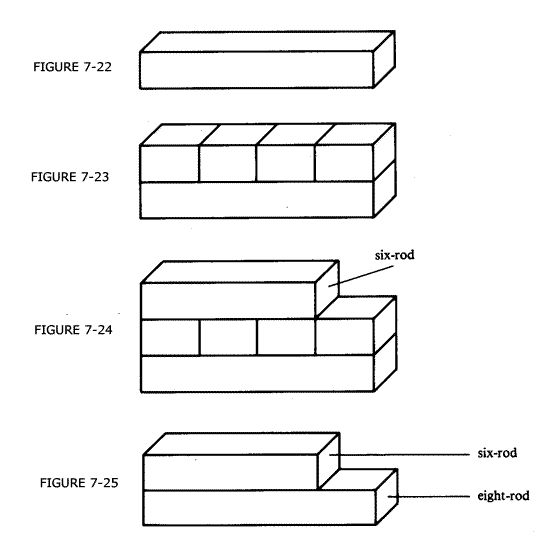
Fractions Greater than One
The realization that a single shaded part in Fig. 7-26 represents 1/4 is especially important when the idea of fractions greater than one whole (5/4, for example) is considered. The model in Fig. 7-27 must first be understood to illustrate that 4/4 equals 1, or one whole unit. This will help the child realize that 5 one-fourth parts will cover more than one whole unit and will require the use of a second unit region.
FIGURE 7-26
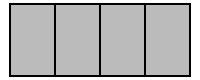
FIGURE 7-27
Figure 7-28 suggests a method for showing 5/4 with paper folding.
Step 1. Fold one region into 4 parts (Fig. 7-28a).
Step 2. Point to a region that is 1/4 of the whole. Can you shade 5 one-fourth parts? No! We need to fold another region in order to show 5 one-fourth parts.
Step 3. Fold another region (Fig. 7-28b).
Step 4. Now shade 5 one-fourth parts (Fig. 7-28c).
Step 5. How many wholes would you need to shade thirteen one-fourth parts? (See Fig. 7-28d.)
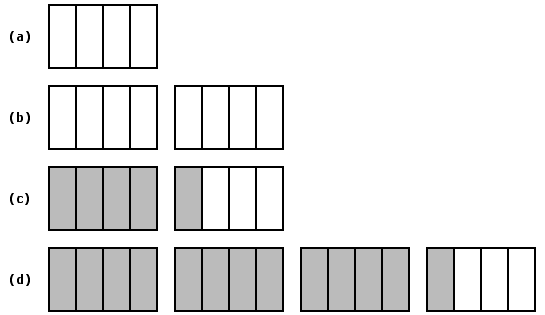
FIGURE 7-28
|
EXERCISE
|
Comparing Fraction—Order and Equivalence
A child's understanding of the ordering of two fractions (that is, deciding which of the relations is equal to, is less than, or is greater than holds for two fractions) need to be based on an understanding of the ordering of unit fractions (that is, fractions with a numerator of one: 1/2, 1/3, 1/4, 1/5, . . .). Let's look at what is involved in the ordering of 1/5 and 1/8. Early in the learning of fractions children understand 1/5 to be less than 1/8 because 5 is less than 8. Through work with manipulatives, children will begin to understand why 1/8 is less than 1/5. It has to do with an important relationship between the size of each part and the number of parts when two unit-wholes of the same size are partitioned into 8 and 5 parts respectively. By paper folding or drawing partition lines, children can achieve a reasonable approximation (drawings will be less precise) to Fig. 7-29.
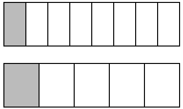
FIGURE 7-29
The first observation children can make is that the part shaded to represent 1/8 is smaller than the part shaded for 1/5. From this observation the children must learn to make the symbolic statement 1/5 is less than 1/8.
We are going to repeat part of the previous sentence here for emphasis: From this observation children must learn to make the symbolic statement.... More accurately, it is from many similar observations that the child learns to make the symbolic statements.
After considerable experience with ordering unit fractions, children should be asked to compare fractions such as 4/8 and 7/8. Here we can again observe how important it is for a child to understand (1) that 1/8 is an entity with a specific size and (2) that 4/8 is four 1/8s (that is, 4/8 is four iterates of size 1/8, and similarly that 7/8 is seven iterates of the same size). From this the notion that 4/8 is less than 7/8 has a strong conceptual foundation, both by the logic of comparing four of something (1/8s) with seven of the same something. These concepts are nicely derived from the physical model. In explaining why 4/8 is less than 7/8 some children exhibit this logic while others exhibit thinking directed to their memory of physical displays: 4/8 is less than 7/8 because the size of the parts is the same but there are fewer parts (four) in 4/8 than in 7/8. Always a word of caution! Would you be surprised to hear a child say, "7/8 is less than 4/8 because seven is more parts and as the parts become more in number, they become smaller in size'' Several of our students did just that!
Understanding of the important relationship between the size and number of parts into which a whole is partitioned is very important in determining the order of fractions such as 4/8 and 4/13 (that is, fractions with the same numerator). Children who correctly order these as 4/13 is less than 4/8 often explain that each has the same number of pieces (four) but the pieces in 4/13 are smaller because there are more pieces.
Finally, the question of ordering two "general fractions" (that is, neither their numerators nor denominators are equal) comes into instruction. For some fractions in this category children invent (and can be taught) interesting strategies. One that we found in our work in the RNP is as follows. To decide which of 7/8 or 12/13 is less, some children reason 7/8 is one (part) away from one whole or 8/8s (meaning 1/8) and 12/13 is one (part) away (meaning 1/13). Because 1/13 is less than 1/8, 12/13 is closer to 1, so 7/8/8 is less than 12/13. Observe the sophistication in the thinking just described. Not bad for a fourth-grade student.
|
EXERCISE
|
Some general fractions, for example 5/8 and 7/12, have neither equal numerators nor equal denominators. They lend themselves to a small modification of the above strategy in which one was used as a reference point. In this case, 5/8 is l/8 more than 1/2, while 7/12 is 1/12 more than 1/2. Because 1/12 is less than 1/8, 7/12 is closer to 1/2, so 7/12 is less than 5/8. Some children we worked with in the RNP also invented this strategy. We refer to these strategies as "reference point strategies."
In the two preceding examples observe how important concepts such as "close to one" or "close to 1/2" were applied. And also observe how important the ability to order (determine which was larger) unit fractions appeared to be. In the second example (comparing 7/12 and 5/8 to 1/2), the children must have realized both 6/12 and 4/8 are equal to 1/2. It appears that the reference point strategy is a powerful strategy. The range of its applicability is subject to having well-understood reference points. One and 1/2 were the two used most often. If children had equally good understandings of other fractions as 3/4 or 2/5, there might also be cases when these could serve as appropriate reference points.
Ultimately the problem of ordering two general fractions rests on considerable knowledge of fraction equivalence. A general algorithm—usually called a common denominator algorithm—could be applied to determine the order or equivalence of 6/15 and 5/12 as follows:
1. Find the lowest common denominator (that is, find the lowest common multiple (LCM)of 15 and 12 - 3•5•4=60).
2. Change 6/15 and 5/12 to equivalent fractions with denominator of 60.
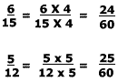
3. Use the fact that 24/60 is less than 25/60 to decide that 6/15 is less than 5/12.
The notion of equivalence of fractions must be understood before other rational number tasks can be performed.
Before children learn an algorithm based on a common denominator, they must have had much experience with fraction equivalence. Children must develop a meaningful algorithm or procedure for determining which fractions are equivalent fractions. We suggest that it be developed through experience with physical and diagrammatic models.
The usual algorithm for generating equivalent fractions is
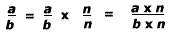
where n is any number except zero. Note that n/n = 1, so a/b is simply being multiplied by 1. This does not change its value. With children we usually limit n to whole numbers although there are long-term advantages to allowing n to be a fraction or mixed number as well. For example, 4/6 = 6/9 because 4 times 1 1/2 = 6 and 6 times 1 1/2 = 9.
Children can determine several fractions equivalent to 1/2 (or another fraction) by using paper folding. Figure 7-30 suggests the folds to be made in establishing that 1/2, 2/4, 3/6, and 4/8 are equivalent. It can also be observed that
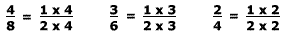
Generalizing from the manipulative displays and the patterns with the symbols, whenever the numerator and denominator of a fraction are multiplied by the same nonzero whole number, then an equivalent fraction results. Symbolically this generalization can be written as
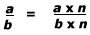
for all fractions
a/b and for all whole numbers n, n  0.
0.
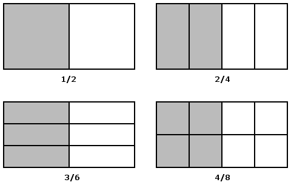
FIGURE 7-30
|
EXERCISES
|
Operations on Rational Numbers
As we consider procedures for teaching children to add and subtract rational numbers the reader should be alert to the fundamental nature of previously learned concepts to a meaningful understanding of addition and subtraction. Especially keep in mind:
- The concept of a unit fraction (for example, 1/2, 1/3, 1/4).
- The notion that any fraction m/n is m iterates (repetitions) of the associated unit fraction l/n. For example, 5/4 is 1/4 and 1/4 and 1/4 and 1/4 and 1/4, or 1/4 + 1/4 + 1/4 + 1/4 + 1/4.
- That rational numbers of the form a/b are complex entities consisting of at least three separate but yet related concepts—the numerator a, the denominator b, and multiplicative relationship between a and b, which defines the entity a/b.
- That every rational number a/b has size.
- That the notions of order and equivalence play a central role in understanding addition and subtraction.
Addition and Subtraction — Developing Understanding with Manipulative Aids
Manipulative aids can be used to help children develop concepts for addition and subtraction of rational numbers with like denominators.
We will use paper folding to illustrate 1/4 + 3/4. We begin by partitioning a piece paper into four parts (Fig. 7-31). Then we will shade 1/4 (Fig. 7-32).
The next step is to show 3/4 more, as indicated by the shading in Fig. 7-33. Because the entire region is shaded, the child can see that 1/4 + 3/4 = 1. Also, from the pictures, it can be seen that
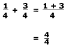
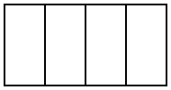
FIGURE 7-31
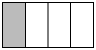
FIGURE 7-32
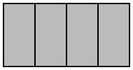
FIGURE 7-33
After the child has seen and done several such examples with manipulative objects, the common pattern should be observed: to add fractions with the same denominator, add the numerators and keep the same denominator. For upper-grade children, this generalization is usually stated as
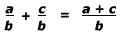
The cases in which the sum is greater than one are somewhat more difficult for children. Figure 7-34 shows how the following problem would look when carried out with paper folding.
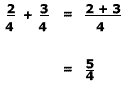
|
EXERCISE
|
Understanding addition of fractions with the same denominator helps in understanding subtraction. The generalization of subtraction of fractions is similar to that of addition:
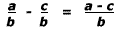
a > c.
We demonstrate next how to solve 3/4 - 1/4 using paper folding.
Fold the paper into fourths, identify three of the fourths, and mentally remove or physically erase one of the fourths (Fig. 7-35).
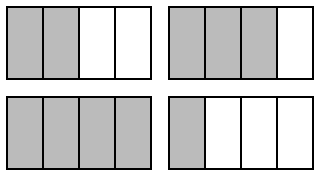
FIGURE 34
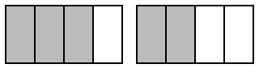
FIGURE 35
|
EXERCISE
|
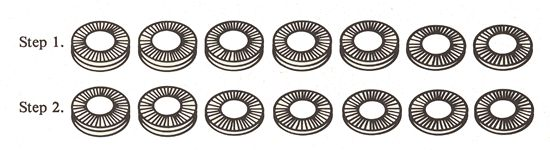
FIGURE 7-36
Typically, the school curriculum separates the teaching of addition and subtraction of fractions with like denominators from the teaching of addition and subtraction with unlike denominators, as we have done in our discussion. Children should consider addition problems such as 1/2 + 3/4 in a teacher-group discussion before they learn the lowest common denominator algorithm. A child with a good understanding of 3/4 will see 3/4 as 2/4 + 1/4, and will see 2/4 as equal to 1/2. Thus, 1/2 + 3/4 is two halves and 1/4 more, or 1 and 1/4, illustrating the associative property as it relates to addition. Similarly, many children will be able to "reason out" an answer to 1/2 + 5/8 without knowledge of the formal common denominator algorithm. This is highly desirable.
Paper folding is useful for developing concepts that underlie addition and subtraction of fractions with unlike denominators. A long narrow slip of paper (for example, adding machine tape) works well for this activity. The relative error due to folding inaccuracies will be small and frequently not noticeable. We illustrate the use of such a strip of paper with an addition example, 1/2 + 2/3. Take a strip of paper (perhaps 1 meter in length) like that shown in Fig. 7-37. Fold it and shade one-half as shown in Fig. 7-38. Fold the same strip into thirds and shade one third as shown in Fig. 7-39.
To tell the sum, we need to know what fraction of the whole strip is shaded. By folding the paper into lengths corresponding to the shortest section in Fig. 7-39, we get the strip to look as it appears in Fig. 7-40. It can be seen from this figure that 1/2 + 1/3 = 5/6.
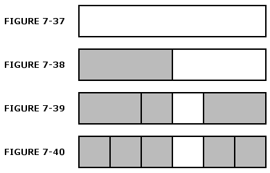
From Fig. 7-40 it can also be seen that 1/2 was changed to the equivalent fraction 3/6 and 1/3 was changed to the equivalent fraction 2/6, so that
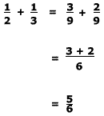
Centimeter rods can also serve as a useful aid when unlike denominators are involved. The following sequence of diagrams illustrates the problem 1/2 + 2/5. The read should have centimeter rods at hand and follow the steps while reading.
Step 1. Find a rod (or rods) that can be partitioned into both two and five parts. Build rod trains of two-rods and five-rods side by side until both trains are the same length (Fig. 7-41), to find the least common multiple of two and five, which is ten. Then find the one rod that matches the two trains in length (Fig. 7-42).
Step 2. Show 1/2 as 5/10 (Fig. 7-43).
Step 3. Add 2/5 shown as 4/10 (Fig. 7-44).
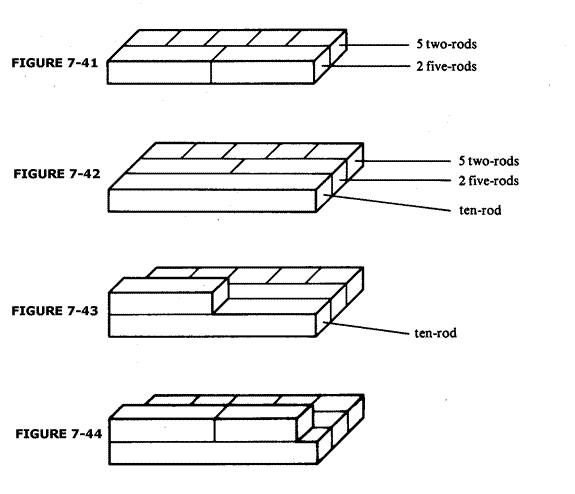
Careful observation of the steps above suggests each of the following:
| 1. |
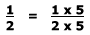
|
Observe that the five-rod on top of the ten-rod could cover one five-rod. |
|
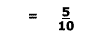
|
Observe that the ten-rod serving as the unit is the same length as 2 five-rods. | |
| 2. |
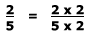
|
Observe that the four-rod on top of the ten-rod could cover 2 two-rods. |
|
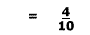
|
Observe that the ten-rod serving as the unit is the same length as the 5 two-rods. | |
|
Thus
|
||
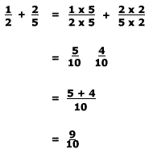 |
The exact parallel between these demonstrations and the symbolic method for adding fractions needs to be carefully observed by the teacher with the children. The time taken to carefully build such concepts, however, will pay large dividends in students' understanding.
|
EXERCISES
|
|
STUDENT INTERVIEW This task was used by the Rational Number Project (Behr, Wachsmuth, & Post, 1985). The Construct a Sum task was designed to elicit insights into the development of qualitative (nonalgorithmic) approaches to a variety of fraction understandings in fourth- and fifth-grade students. Children were asked to select digits to form two rational numbers whose sum was as close to 1 as possible. High achievers were flexible and spontaneous in their conceptions of fraction order and equivalence. Low performers tended to apply concepts in a constrained and inflexible manner. We encourage you to try this activity with a classmate first and then with several intermediate-level children. Compare results. You will be surprised! What conclusions can you draw? Materials Needed
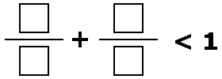 The interviewee is directed to put "number cards" inside the boxes to make two fractions so that when they are added, the sum is as close to 1 as possible but not equal to 1. When administering tasks, discourage use of automatic algorithms and limit response/discussion to two or three minutes. A successful solution requires that the student
This task is more complex than it might first appear, but it can provide important insights into children's understanding of rational number size. |
Multiplication of Fractions—Developing Understanding with Manipulative Aids
The symbolic algorithm for multiplication of rational numbers is mechanically simpler than the symbolic algorithm for addition or subtraction. Some writers and teachers argue that multiplication should be taught to children before addition and subtraction because of this fact. We disagree. While the algorithm for multiplication is simpler, the question of whether multiplication is conceptually simpler is not so easily resolved. It is well known from research that children are able to perform additive operations before they can perform multiplicative operations. For whole numbers this is probably true because one of several interpretations for multiplication is that of repeated addition. However, one cannot really think of 2/3 X 4/5 in this way. From a manipulative perspective, it appears the operation of multiplication has the more complex manipulative base. For this reason we suggest multiplication be introduced after addition and subtraction. To illustrate the conceptual complexity mentioned above, ask yourself why the product of two rational numbers less than one is always less than either of the original numbers. In the example above, the product is less than 2/3 and less than 4/5. Try it!
Using a continuous region model we proceed to find 2/3 x 4/5 as follows:
- Exhibit the unit-whole (that is, exhibit the model for one) (see Fig. 7-45).
- Find 4/5 of the unit-whole; find 4/5 of one (Fig. 7-46).
- Find 2/3 of (4/5 of one); note, we find 2/3 of 4/5, not 2/3 of one (Fig. 7-47).
- Now we want to know (2/3 of 4/5) of 1. The region marked as in Fig. 7-47 is it. We need to find what fraction this is of one (the original unit-whole). To do this, we complete the partition of the unit-whole (see dotted lines in Fig. 7-48).
- Now observe that the region marked with is 8 of 15 parts. We have determined that 2/3 of 4/5 is 8/15, or 2/3 x 4/5 = 8/15.
- Now look carefully at Fig. 7-48 and observe that the eight parts appear as two rows of four; that is, 2 x 4. Also observe that the 15 parts appear as three rows of five; that is 3 x 5. Thus, we can observe that the numerator for 2/3 x 4/5 is 2 x 4 and the denominator is 3 times 5 or
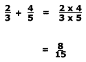
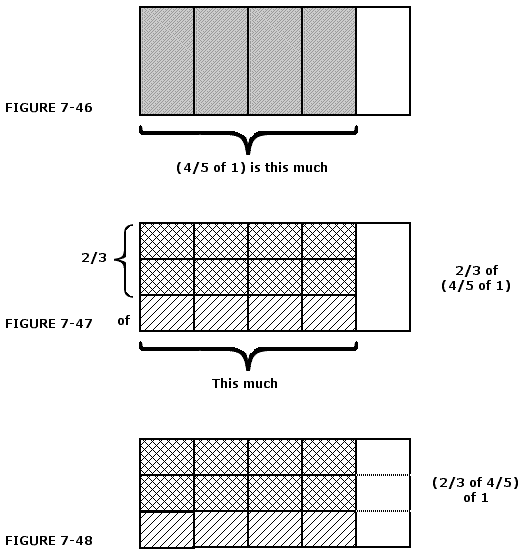
|
EXERCISES
|
Some important conceptual bases for division of rational numbers can also he provided with manipulative aids. In order to prepare children for this work it is important to review with them the notions of partitive and quotative division of whole numbers.
Partitive division of whole numbers is reflected in problems like the following.
If 12 cookies are to he shared equally among 4 children, how many cookies will each child get?
The mathematical model for this problem is 12 ÷ 4 = ?. Children can solve this problem by distributing (like dealing out cards to players) the 12 cookies 1 by 1, 3 at a time, or 2 cookies to each child in one round and 1 in another to give each child an equal share of cookies. This illustrates the physical manipulation of objects to carry out partitive division.
Quotative (or measurement) division is reflected in problems such as the following.
If there are 12 cookies to be shared among some children so that each child gets 4 cookies, how many children will get cookies?
In this type of division, the divisor quantity of 4 cookies per child is used to measure the 12 cookies. Another way to think of this is: How many groups of 4 cookies are there in a group of 12 cookies? This type of division is sometimes related to repeated subtraction in terms of the number of subtractions of 4 until a remainder of zero is obtained: 12 - 4 = 8, 8 - 4 = 4, 4 - 4 = 0. It took 3 subtractions to get to zero, or 3 groups of 4 cookies were removed to use up all of the cookies, so 3 children can be given 4 cookies. Thus, 12 ÷ 4=3.
These two types of division can be illustrated with manipulative aids for division of rational numbers. We will illustrate first with 3/4 ÷ 2/4 = ?. We interpret this to mean that we will distribute the 3 1/4's of the dividend equally among the 2 1/4's of the divisor. (Notice how the unit fractions come into play again!) We proceed as follows:
- Represent the dividend 3/4 as 3 1/4's on one unit and the divisor 2/4 as 2 1/4's on another unit of the same size, as in Fig. 7-49.
- Distribute 2 of the 3 1/4's of the dividend to the 2 1/4's of the divisor as shown in Fig. 7-50. (The arrows suggest this distribution.)
- One of the 3 1/4's of the dividend remains to he distributed equally to the 2 1/4's of the divisor. To do this we partition this single 1/4 into two equal parts, each 1/2 of 1/4, and distribute these as shown in Fig. 7-51.
- We distributed 1 1/2 1/4's from the dividend to each of the 2 1/4's of the divisor. Thus the answer to the division is 1 /2, or, more precisely, 1 1/2 dividend 1/4's per each divisor 1/4. And since the unit (i.e., the unit fractions) is the same for the dividend and divisor, by convention, we just report the answer to be 1 1/2.
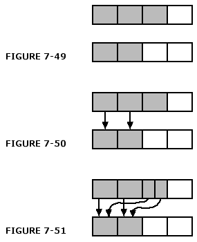
For a second example of partitive division, we use 9/12 ÷ 3/6. For partitive division of rational-numbers, we will find it convenient to change one or both of the fractions so they have a common denominator before we carry out the equal distribution of dividend unit fractions among the unit fractions of the divisor. We proceed as follows:
- Represent the dividend 9/12 on one unit as 9 1/12's and the divisor 3/6 on another unit of the same size as 3 1/6's as in Fig. 7-52.
- Represent the divisor 3 1/6's as 6 1/12's as shown in Fig. 7-53.
- Distribute 1 of the 9 1/12's of the dividend to each of the 6 1/12's of the divisor as in Fig. 7-54.
- Partition each of the remaining 3 1/1 2's of the dividend into two equal parts to make 61/2's of 1/12, then distribute these 6 1/2's of 1/12 among the 6 1/12's of the divisor as in Fig. 7-55.
- The result is that 1 1/2 dividend 1/12's have been distributed to each one of the 6 divisor 1/12's; that is, the result of the distribution is that there is 1 1/2 dividend 1/12's per each divisor 1/12. The answer to the division 9/12 ÷ 3/6 is 1 1/2.
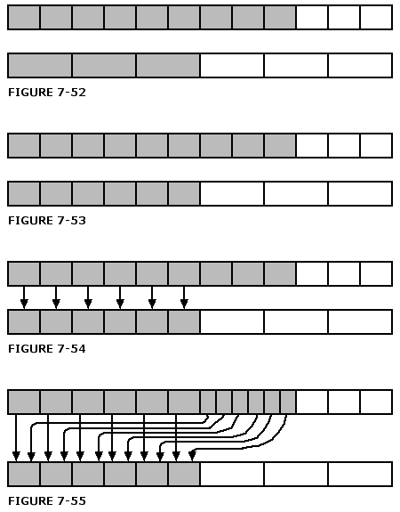
We next look al the quotative interpretation of division, and illustrate with the problem 3/4 ÷ 2/4 = ?. We proceed as follows.
- Represent the dividend 3/4 as 3 1/4's on a unit and then represent the divisor 2/4 and 2 1/4's on another unit of the same size as in Fig. 7-56.
- Use the 2 1/4's divisor quantity to measure the 3 1/4's dividend quantity as suggested in Fig. 7-56 to establish that the measure of 3 1/4's with respect to 2 1/4's is at least 1. Then, measure the remaining, one 1/4 of the dividend, and find that its measure with respect to the 2 1/4's measure unit is 1/2 as in Fig. 7-57. Thus the total measure and the answer to the division 3/4 ÷ 2/4 is 1 1/2.
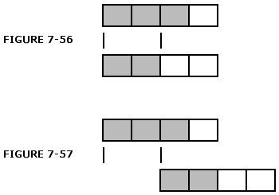
We leave to you the problem of giving a similar representation for the quotative division 9/12 ÷ 3/6. As with partitive division, we suggest that the divisor, 3/6, be changed to twelfths before the measurement procedure is started.
|
EXERCISES
|
In addition to using manipulatives, teachers can also use number patterns and previously developed concepts to help children remember how to perform operations. Notice the pattern in each of the following divisions.
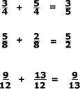
This pattern suggests a common denominator algorithm for division. It is a satisfactory division algorithm which avoids the troublesome rule of "invert and multiply." This common denominator algorithm can also be used to divide fractions with unlike denominators by changing the original fractions to ones having a common denominator.
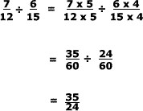
The usual invert and multiply algorithm can be developed from number patterns and previous concepts as follows.
By the time children do division they will have already seen that multiplying both the numerator and denominator of a fraction by the same number results in another name for the original fraction (that is, an equivalent fraction). They also know that any number divided by one is that number. These facts can be used to develop a pattern for dividing fractions. First, we show the steps in a specific case.
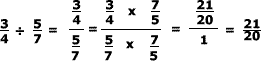
Note that 7/5 was chosen as the multiplier because 5/7 times 7/5 results in 1 in the denominator. Let us generalize this problem to obtain a general procedure for changing a problem of dividing two fractions to a multiplication problem.
Thus, dividing one fraction by another is the same as multiplying the first fraction by the reciprocal of the second: a/b ÷ c/d = a/b X d/c.
Division of fractions is one of the more difficult concepts for children. It will help children if the teacher knows and observes with the children basic ideas associated with division. Children will know from whole number work that an answer to a division problem such as a ÷ b is equal to, greater than, or less than one according as whether b = a, b < a, or b > a, respectively. This knowledge will help the child see that the same relationship holds for a/b ÷ c /d. The answer to this division is less than one when c/d > a/b, is equal to one when c/d = a/b, and is greater than one when c/d < a/b. Note again how the notions of fraction order and equivalence underlie other concepts of rational numbers, in this case division.
Other Interpretations of Rational Numbers
We next turn to two other interpretations of rational numbers—measurement and decimal. The most extensive interpretation given to rational numbers in U.S. schools is that of part-whole. Other interpretations are also important.
The Measurement Interpretation
The measurement interpretation is usually reflected in the use of the number line as physical model. As was indicated earlier in the review of research, it is known that children have difficulty with the number line. This does not necessarily suggest that the number line not be used, but rather that it be used appropriately, and with knowledge on the part of the teacher of what difficulties a child might have. The reason for the term measurement interpretation is that rational numbers are defined as a measure. When one thinks of measure, the notion of a unit of measure and of subunits of that unit of measure comes to mind. On a number line the unit of measure is the distance on the line from zero to one (Fig. 7-58).
Obviously in some cases this distance is a centimeter, in others an inch, and in still others a kilometer or light year, but the basic notion of the distance between zero and one defining the unit remains intact. Multiples of this unit distance are generated on the number line by iterating the distance from zero to one along the line (Fig. 7-59).
Now, what is the meaning of a fraction such as 5/8 on the number line? To show 5/8 we establish the subunit of 1/8 (Fig. 7-60); 5/8 is now simply the distance on the number line equal to five iterations of 1/8 (Fig. 7-61). The point 5/8 on the number line is usually understood to mean a point whose distance from zero on the line is five l/8-units.
Similarly, to show 5/13, 7/12, and so forth on the number line, we think of partitioning units on a number line into subunits of 1/13, or 1/12, and then traveling a distance on the number line from zero until we have traversed five or seven of these subunits.
Frequently teachers suggest to children that each rational number represents a point on the number line. More accurately, it represents a distance on the number line. We can think of 5/8 as being associated with a point on the number line, provided we take the distance starting at zero and iterate five subunits of 1/8 in the direction of one.
In Fig. 7-62 5/8 is associated with a point that is 5/8 of the distance from zero to one. On the other hand, consider the number line in Fig. 7-63. The distance from A to B also is five iterates of 1/8, so this distance is also 5/8. It is important for children to be able to represent fractions such as 5/8 in various places on the number line. Why? One reason is because a number line is frequently used to model addition. Consider 3/8 + 7/8. The interpretation of this addition on the number line is one of finding the sum of two measures, that is, two distances. First 3/8 is represented (Fig. 7-64). Next a distance of 7/8 is extended beyond the point corresponding to 3/8. Do you see now why a child needs to be able to represent a fraction as a distance anywhere on the number line?
From Fig. 7-65 a child can observe that 3/8 + 7/8 = 10/8 and also that 3/8 + 7/8 = 1 and 2/8.
A number line can be used to model rational numbers greater than one (mixed numbers) provided the child already understands certain basic concepts about fractions before starting number line work. These notions include the concept of a unit fraction, and the idea that all other fractions are simply iterates of the appropriate unit fraction.
For example, to show 13/3 on the number line, the child must be aware that 1/3 is the appropriate subunit and that 13/3 is found by traveling from the zero point a distance of 13 iterates of 1/3 (Fig 7-66).
Once a child finds 13/3 as ;I point 13 1/3's away from zero, then the child can also observe that
The number line concept can fortify children's understanding of fraction order and equivalence concepts. Several number lines are used for this (Fig. 7-67).
With the teacher emphasizing that it is the distance from zero that is important children can:
| Observe | and conclude | |
| 1. | The distance from zero to 2/3 is less than | |
| the distance from zero to 3/4. | 2/3 <3/4 | |
| 2. | The distance from zero to 2/4 is equal to | |
| the distance from zero to 3/6 and. 2/4 =3/6 | 2/4 = 3/6 | |
| to the distance from zero to 4/8. 2/4 =4/8 | 2/4 = 4/8 |
|
EXERCISE These questions are challenging for most children. Do them and discuss difficulties children might have.
|
Decimals
Decimals are yet another important interpretation of rational number and are very useful in a wide variety of settings. Measurement using the metric system, percent, and money are three of the more important ones.
Carpenter and co-workers (1981) report a lack of conceptual understanding about decimals in 9-year-old and 13-year-old students surveyed by the National Assessment of Educational Progress (NAEP). Carpenter advocates building a strong understanding of decimal concepts before proceeding to computation and application. Carpenter and co-workers suggest two approaches: capitalizing on students' knowledge and skill with whole numbers, and tying their understanding of common fractions to that of decimals. To accomplish this, students need a firm understanding of the place value system and how it relates to decimals, and a good background with common fractions, which can aid in the development of tenths and hundredths.
O'Brien (1968) investigated the effects of three treatments on students' learning of decimal computation. O'Brien found that students who were taught decimals with an emphasis on the principles of numeration, with no mention of fractions, scored lower on tests of computation with decimals than those taught the relation between decimals and fractions.
Decimals can pose special problems for children. They have characteristics similar to both whole numbers and fractions. Decimals, however, are different from each of these in the way they are conceptualized and in the way they are manipulated. For example, a student in our teaching experiment, when asked which was less, 0.37 or 0.73, suggested that 0.37 was greater because 0.37 was three tens and seven hundreds (not three tenths and seven hundredths) and 0.73 was seven tens and three hundreds not seven tenths and three hundredths). The student then concluded that 0.37 (three tens and seven hundreds) was certainly greater than 0.73 (seven tens and three hundreds). Although such a comment implies an impressive string of logical thought, the problem occurred when the student attempted apply whole number reasoning strategies to the newly evolving decimal understandings. This phenomenon is common and was alluded to earlier in this chapter when other students made similar errors while attempting to deal with other emerging rational number concepts.
Decimals are in their own right an important extension of both the base ten place value system and of rational numbers. Decimals can be correctly interpreted from either perspective. The first highlights the place value aspect of decimals and considers decimals as a logical extension of the base ten numeration system to include tenths (one-tenth of one whole); hundredths (one-tenth of one-tenth) and so forth. The second considers the decimal concept to be a special case of the area-based part-whole interpretation of fractions in which the whole is divided into a number of parts equal to some multiple of ten, the most common being 10, 100, or 1000. These two interpretations are not entirely separate. We shall see that both understandings interact and are important to understanding the decimal concept and operations with decimals. Consequently the student embarking on the study of decimal fractions for the first time should have a firm understanding of the base ten numeration system, including the ability to add and subtract whole numbers, and a grasp of a variety of fraction concepts including the ability to order two fractions, to generate equivalent fractions, and to perform simple calculations with fractions.
There are several embodiments (materials) that can be used to depict the decimal numeration system. Some are better than others. The basic concept, as with all materials, is to provide a physical model which parallels in its structure the concept which is to be taught.
In the case of decimals, there are two rather different conceptual approaches. The first is to regard decimals from a fraction part-whole perspective, where the unit is always divided into a number of parts equal to a positive power of ten, 10, 100, 1000, and so on. Under this interpretation, .37 is interpreted as 37 of 100 parts or 37 hundredths, .6 as 6 of 10 parts of 6 tenths and .037 as 37 of 1,000 parts of 37 thousandths.
The second interpretation considers the decimal system as an extension of the base ten numeration system where decimals less than one have negative integral exponents which mirror those of the positive numbers; in other words
... 103, 102, 101, 100, 10-1, 10-2, 10-3 ...
or equivalently
... 1000, 100, 10, 1, 1/10, 1/100, 1/1000 ...
Incidentally, you may be wondering why 100 = 1 and not 0, as would seem more intuitive. We digress and consider the arguments.
We know that any nonzero number divided by itself must be 1, including numbers raised to various powers. Therefore,
and so on. We also know that when two numbers raised to different posers are divided, one can subtract their respective exponents to find the quotient; in other words,
alternatively,
A similar argument could be used for the quotient of any two numbers raised to a different exponent, i.e., . Now consider . We know from the first argument that the quotient must be one. But it is also true that is equal to . We conclude that must be 1. this is one of those "messy" aspects of mathematics where in the final analysis mathematicians defined anything (except zero) raised to the zero power to be equal to 1 so as to be consistent with the rest of the system.
Wearne and Hiebert (1988, 1989), in their research on children's learning of decimal numbers, selected the Dienes' base-10 arithmetic blocks (MAB) as the main physical embodiment to be used in their research. Later work also included bundles of straws (Hiebert, Wearne, & Tabor, in press). the Dienes materials exist also in bases, 3, 4, 5, and 6. Only base-10 blocks were used in these studies. The values and symbols assigned to these blocks were as follows:
In the work of Wearne and Hiebert, "decimal fractions are generated by partitioning a unit into 10 equal pieces, partitioning each of these pieces into 10, and so on" (Wearne & Hiebert, 1988, p. 374). In one of their experiments with children, nine lessons of approximately 25 minutes in length were developed. The first five were concerned primarily with developing a linkage between the blocks and written symbols. This is very different from the usual approach. The remainder of the lessons related to the development of addition and subtraction concepts within this context. Students were given a block arrangement and asked to develop the appropriate symbolic counterpart. They were given symbols such as 2.3 + .62 and 5 + .3 and asked to display an appropriate collection of blocks. Eventually the blocks were removed, and students were to work exclusively with pencil and paper, although they were encouraged to think about the blocks as they manipulated the symbols.
The vast majority of students were able to establish connections between the blocks and symbols, and 40 percent could even extend these concepts to noninstructed symbolic transfer problems. Wearne and Hiebert concluded that there is a close association between correct answers and students' ability to establish connections between symbols and blocks. They further suggest that students undergo a continuing process of reorganization and flux rather than unerring progress toward the development of the concept. So we must expect some students to regress while they are progressing.
Operations on Decimals
Let us consider a simple operation with two decimals and note the interplay between previously learned place value and fraction concepts. The assumption here is that children have already used graph paper (one by ten and ten by ten grids), multibase arithmetic blocks, and place value charts extended to the right past tens and ones to one-tenths and one-hundredths. In other words, previously used materials and ideas can be exploited to develop meaning for the new concept. Incidentally, the prefix "deci" means "tenth part."
A Fraction Interpretation of Addition
Consider the task of adding 0.6 and 0.73. Fraction understandings imply that 0.6 is simply six of ten strips on a ten-by-ten grid as indicated in Fig. 7-71a. Now 0.6 can be written as 6/10. Repartitioning each of the strips into ten parts allows us to reinterpret the six shaded strips (6/10) as 60/100, an equivalent fraction. Similarly 0.73 can be interpreted 7/10 + 3/100 or as more commonly written 73/100 (see 7-71b). Now 0.6+0.73 can be interpreted
When adding decimals we generally do not interpret each decimal as a fraction. It is important to do this initially, however, to communicate to children that decimals are not an entirely new concept but rather an extension of ideas already encountered.
Place Value Interpretations
Multibase arithmetic blocks can be used to depict decimals in a place value setting. If the flat were defined as the unit, longs would be tenths, and units would be hundredths. If the block were defined as the unit, flats would be tenths, longs would be hundredths, and units would be thousandths. The ease with which children are able to redefine the unit is an important rational number-related skill and was discussed earlier in this chapter.
Children can use the physical pieces and make the regroupings in a manner similar to that discussed in Chapter 5. Figure 7-72 illustrates a place value chart using multibase arithmetic blocks.
Students' initial calculations should involve the actual manipulation of these materials or a reasonable facsimile such as graph paper cut into units (one by one), longs (one by ten), and flats (ten by ten). Materials should be used in conjunction with place value charts similar to Figs. 7-72 and 7-73. After some experience with these concrete embodiments, calculations with symbols can be undertaken. Place value charts emphasize the place value nature of the decimal calculations.
To add 0.6 and 0.73 in the conventional manner, we could also adapt understandings from whole number addition, particularly the ideas that each column is ten times the column to its immediate right and that all addends must be correctly aligned. To add 0.6 and 0.73 we could use the place value charts as follows: Using previously learned strategies the sum of 0.6 and 0.73 in the enactive mode (Fig. 7-74a) would be one flat, three longs, and three units after exchanging ten longs for one flat. Adding 0.6 and 0.7 3 symbolically (Fig. 7-74b), the sum would he 133, disregarding the placement of the decimal point for a moment. Where should it be placed? The interpretation of this result can again rely on fraction understandings. That is, 60/100 + 73/l00 = 133/100, which is a "bit more than" one whole, so 133 must become 1.33. Using regrouping procedures similar to those used with whole numbers, the answer becomes 1.33 rather than 0.133, 13.3, or 133.
What is important in this discussion is the subtle interplay between the place value concept derived from previous work with whole numbers and various fraction understandings. If done effectively this interplay supports the development of a new idea and its associated symbolic system. Other operations with decimals can be developed and validated in a similar manner.
Multiplication and Division of Decimals
Multiplication and division of decimals can be taught by using either the common fraction or the place value approach. When using the common fraction approach, students should use their existing knowledge of fractions, performing the fraction multiplication and writing the answer as a decimal. For example,
|
0.6
x 0.2
|
becomes
|
6/10 x 2/10
|
| which is equal to | 12/100 | |
| which is equivalent to | 0.12 | |
|
so
0.6 x 0.2
|
equals | 0.12 |
After completing several exercises of this type, students will generalize the rule for multiplying decimals: The number of decimal places in the product is equal to the total number of decimal places in each factor. In this way the students develop the multiplication algorithm for themselves, rather than merely memorizing a procedure they do not understand.
Division by decimals has long been an area of difficulty for students. It is important that an understanding of the meanings of division and division by a decimal is developed before any algorithm is introduced.
There are two basic interpretations of division (Fischbein et al., 1985). The first is called partitive division, the second is called measurement or quotative division. In partitive or sharing division, the divisor specifies how many groups the dividend should be separated into, while in measurement division, the divisor specifies the size of the groups to be made. The following example highlights this difference:
Example: 6/2
Partitive interpretation. Make two groups: 000 000
Answer is the size of each group (i.e., 3 per group). Partitive division also results in a "per" quantity. The correct answer here is "3 per group," not 3.
Measurement or Quotative Interpretation: Make groups of size 2 until initial quotient is exhausted: 00 00 00
Answer is the number of groups. (Answer is 3 groups.) Quotative division results in a quantity that is a number and a label, i.e., 3 groups. Unlike partitive division the answer is not a "per" quantity.
When dividing the number by a decimal, the partitive interpretation tends to be a bit more cumbersome. Using the example 3/0.5, the partitive interpretation would ask us to make 0.5 of a group or to suggest that 3 is 0.5 of a group. This is a rather difficult concept to learn, especially if the divisor were a number more complicated than 0.5.
The measurement or quotative interpretation is more helpful because in the example 3/0.5 it asks us to make groups of size 0.5. This can he done using a variety of manipulatives, including base-ten blocks and fraction pieces or Cuisenaire rods.
Completing this example
3/0.5 = dividing 3 into groups of 0.5 we get
0.5 0.5 0.5 0.5 0.5 0.5
Result = (the number of groups, in this case 6).
Thus 3 ÷ 0.5 = 6.
Activities of this sort are crucial to the development of the concept of division by decimals. Of course, more complex divisions will ultimately be handled with a calculator.
Children should have a variety of experiences with each of the models. Teachers should continually emphasize the order and equivalence within and between the two different symbolic systems.
For example,
0.4 is less than 0.41; 0.4 is equal to 0.40
0.37 is less than 0.38; 0.37 is equal to 37/100
0.8 = 8/10 = 80/100
0.62 x 0.3 = 62/100 x 3/10= 186/1000 = 0.186, and so forth.
When children are comfortable with the underlying concepts, operations with decimals can begin to be developed. Of course, there is no reason to spend valuable time developing speed and accuracy with these decimal operations because calculators will ultimately replace complicated work with pencil and paper.
Summary
Chapter 7 presented a variety of ways to think about rational numbers and suggested the variety of mathematical interpretations and a variety of physical materials are necessary children are to fully understand these complex concepts. Ideas about rational numbers evolve over several years in the school curriculum. Like measurement, rational numbers permeate the school curriculum and are a very important area of investigation. Without them, much of what is to be taught later cannot be comprehended. Rational numbers are difficult in and of themselves because they are such a broad and far-reaching topic. To add to the problem, they are generally poorly developed by textbooks.
The section on decimals in Chapter 7 suggested two important approaches to understanding of decimals and provided a variety of activities for teaching them.
The programs of research referred to in this volume provide clear suggestions to the classroom teacher. In this chapter, the suggestions are related to the teaching of decimal and fraction concepts. But there is a larger message here. Other studies reported on in this volume relate to addition and subtraction, multiplication and division, geometry, estimation, and the like. All have a similar focus, and all demonstrate the necessity of exposing young learners to physical interpretations (embodiments) of abstract concepts. In addition, all attempt to make the mathematics part of the child's physical experience before and during the development of abstract symbolic manipulations.
An omnipresent theme has been the development of understanding of concepts before algorithms are introduced. Because fractions and whole number operations will already be familiar to students, it seems reasonable to exploit these previous understandings in developing decimal and other rational number concepts. After students understand these concepts they should be free to use calculators as needed, thus freeing valuable instructional time for other important activities including real-world applications and development of other mathematical concepts.
References
Behr. M. 1977. The effects of manipulatives in second graders' learning of mathematics (Vol. I). PMDC Technical Report No. 1. Tallahassee, Fl: Project for the Mathematical Development of Children.
Behr, M.. & Bright, G. 1984, April. Identifying fractions on number lines. Paper presented at the meeting of the American Educational Association, New Orleans, LA.
Behr, M. J., Lesh, R., Post, T. R., & Silver, E. A. 1983. Rational number concepts. In R. Lesh & M. Landau (Eds.), Acquisition of mathematical concepts and processes (pp. 92-126). New York: Academic Press.
Behr, M., Wachsmuth, I., Post, T., & Lesh, R. 1984. Order and equivalence of rational numbers. Journal for Research in Mathematics Education, 15:323-341.
Behr, M. J., Wachsmuth, I., & Post, T. R. 1985. Construct a sum: A measure of children's understanding of fraction size. Journal for Research in Mathematics Education, 16(2):120-131.
Bell, M., Fuson, K. D., & Lesh. R. 1976. Algebraic and arithmetic structures. New York: Free Press.
Bruner, J, 1966. Toward a theory of instruction. New York: W. W. Norton.
Carpenter, T. P., Coburn, T. G., Reys, R. E., & Wilson, J. W. 1976. Notes from national assessment: Addition and multiplication with fractions. Arithmetic Teacher, 23(2):137-141.
Carpenter, T. P., Corbitt, M. K., Kepner, H. S., Jr., Lindquist, M., & Reys, R. E. 1980. National assessment: Prospective of students' mastery of basic skills. In M. Lindquist (Ed.), Selected issues in mathematics education. Berkeley, CA: McCutchan
Carpenter, T. P., Corbitt, M. K., Kepner, H. S., Jr., Lindquist, M., & Reys, R. E. 1981. Decimals: Results and implications from national assessment. Arithmetic Teacher, 28(8):34-37.
Dienes, Z. 1960. Building up mathematics. London: Hutchinson Educational Limited.
Ellerbruch, L. W., & Payne, J. N. 1978. A teaching sequence for initial fraction concepts through the addition of unlike fractions. In M. Suydam (Ed.), Developing computational skills. Reston, VA: National Council of Teachers of Mathematics.
Faires, D. 1963. Computation with decimal fractions in the sequence of number development (Doctoral dissertation, Wayne State University). Dissertation Abstracts International, 23:4183.
Fischbein, E., Deri, M., Sainati, N. M., Sciolis, M. M. 1985. The role of implicit models in solving verbal problems in multiplication and division. Journal for Research in Mathematics Education, 16(1):3-17.
Gagne, R. M., & White, R. T. 1978. Memory structures and learning outcomes. Review of Educational Research, 48:187-222.
Grossman, A. S. 1983. Decimal notation: An important research finding. Arithmetic Teacher, 30(9):32-33.
Hiebert, J., & Tonnessen, L. H. 1978. Development of the fraction concept in two physical contexts: An exploratory investigation. Journal for Research in Mathematics Education, 9(5):374-378.
Hiebert, J., Wearne, D. 1984, April. A model of students' decimal computation procedures. Paper presented at the Annual Meeting of the National Council of Teachers of Mathematics, San Francisco.
Hiebert, J., Wearne, D., & Taber, S. (In press.) Fourth graders' gradual construction of decimal fractions during instruction using different physical representations. Elementary School Journal.
Hoffer, A. 1978. Number sense and arithmetic skills. A resource for teachers. Palo Alto, CA: Creative Publication.
Karplus, R., Karplus, E., Formisano, M., & Paulsen, A. C. 1979. Proportional reasoning and control of variables in seven countries. In J. Lochhead & J. Clements (Eds.), Cognitive process instruction. Philadelphia: Franklin Institute Press.
Karplus, R., Karplus, E., & Wollman, W. 1974. Intellectual development beyond elementary school: Ratio, the influence of cognitive style (Vol. 4) School Science and Mathematics, 76(6):476-482.
Kidder, R. F. 1980. Ditton's dilemma, or what to do about decimals. Arithmetic Teacher, 28(2):44-46.
Kieren, T. E. 1976. On the mathematical cognitive and instructional foundations of rational numbers. In R. A. Lesh & D. A. Bradbard (Eds.), Number and measurement: Papers from a research workshop(pp. 101-144). ERIC/SMEAC.
Kieren, T. E., & Southwell, B. 1979. Rational numbers as operators: The development of this construct in children and adolescents. Alberta Journal of Educational Research, 25(4):234-247.
Kouba, V. L., Brown, C. A., Carpenter, T. P., Lindquist, M. M., Silver, E. A., & Swafford, J. O. 1988. Results of the fourth NAEP assessment of mathematics: Number, operations, and word problems. Arithmetic Teacher, 35(8):14-19.
Kurtz, B., & Karplus, R. 1979. Intellectual development beyond elementary school: Teaching for proportional reasoning (Vol. 7). School Science and Mathematics, 79(5):387-398.
Lesh, R., Landau, M., & Hamilton, E. 1980. Rational number ideas and the role of representational systems. In R. Karplus (Ed.), Proceedings of the Fourth International Conference for the Psychology of Mathematics Education. Berkeley, CA: University of California.
Noelting, G. 1980. The development of proportional reasoning and the ratio concept: Part I- The differentiation of stages. Educational Studies in Mathematics, 11:217-253.
Novillis, C. 1976. An analysis of the fraction concept into a hierarchy of selected subconcepts and the testing of the hierarchy dependencies. Journal for Research in Mathematics Education, 7:131-144.
Novillis-Larson, C. 1980. Locating proper fractions. School Science and Mathematics, 53(5):423-428.
O'Brien, T. C. 1968. An experimental investigation of a new approach to the teaching of decimals. (Doctoral dissertation, New York University, 1967). Dissertation Abstracts International, 28A:4541-4542.
Post, T. R. 1974. A model for the construction and sequencing of laboratory activities. Arithmetic Teacher, 21(7 ): 616-622.
Post, T. R. 1981. The role of manipulative materials in the learning of mathematical concepts. In M. Lindquist (Ed.), Selected issues in mathematics education. Berkeley, CA: McCutchan.
Post, T. R., Behr, M., Lesh, R., Wachsmuth, I. 198 5. Selected results from the rational number project. Proceedings of the Ninth Psychology of Mathematics Education Conference. Antwerp, The Netherlands: International Group for the Psychology of Mathematics Education, 342- 351.
Post, T. R., Wachsmuth, I., Lesh, R., Behr, M. 1985. Order and equivalence of rational numbers: A cognitive analysis. Journal for Research in Mathematics Education, 16(1): 18- 36.
Pothier, Y., & Sawada, D. 1983. Partitioning: The emergence of rational number ideas in young children. Journal for Research in Mathematics Education, 14:307-317.
Wearne, D., & Hiebert, J. 1988. Cognitive approach to meaningful mathematics instruction: Testing a local theory using decimal numbers. Journal for Research in Mathematics Education, 19(5):371-384.
Wearne, D., & Hiebert, J.1989. Cognitive changes during conceptually based instruction on decimal fractions. Journal of Educational Psychology, 81(4): 507-513.